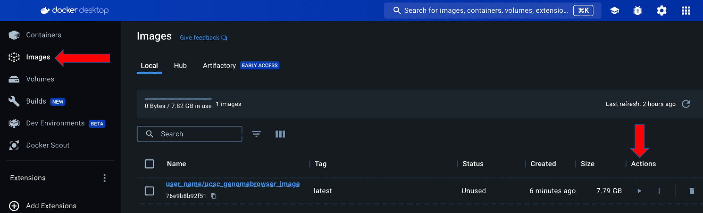
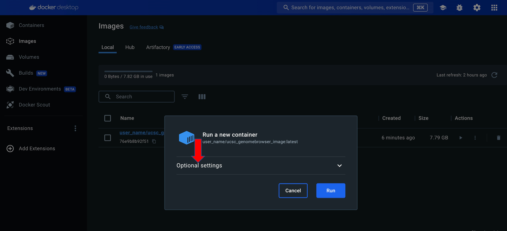
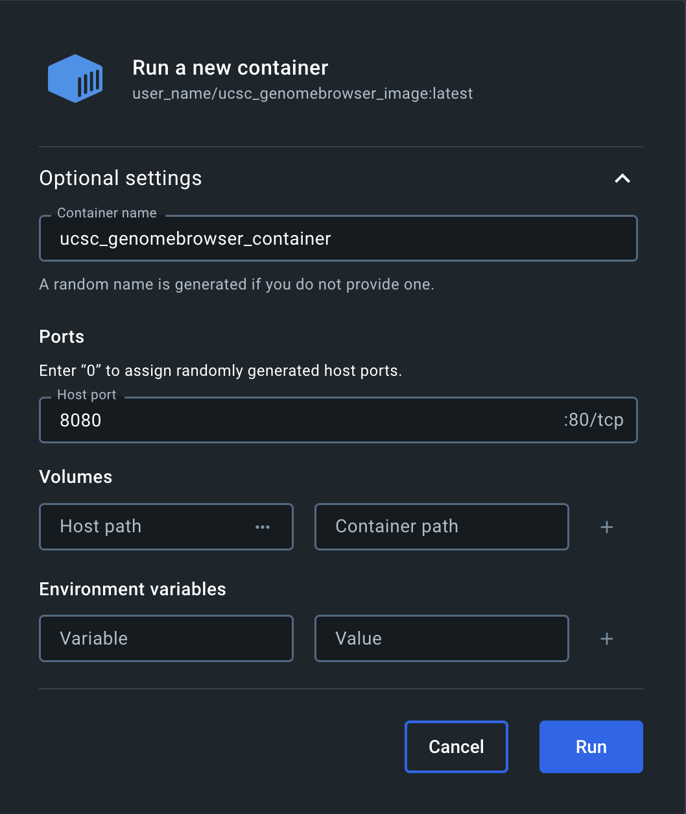
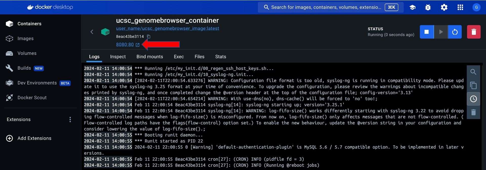

Docker is a platform for developing, testing and running applications. Docker can be used to run genomics tools and manage software such as the UCSC Genome Browser. Docker offers consistency across different computers and environments by packaging everything needed including specific software versions and configurations into a self-contained unit called a container.
A container is software that packages up code and all its dependencies to run an application quickly and reliably from one computing environment to another. A container is isolated from other containers and a Docker container can be run on a developer's local laptop, virtual machines, on cloud providers, or other combinations of environments. A genomics analysis pipeline or entire analysis environment can be packaged to a local computer into a Docker container and moved to a cluster or a cloud server. See also: Use containers to Build, Share and Run applications
A Dockerfile is a text file that provides instructions to build an image. The Dockerfile is written in Dockerfile syntax. A docker image is a read-only template with instructions and everything needed to run an application for the container. See also: Overview of the get started guide
Start Docker Desktop after installation is complete:
sudo systemctl start docker
UCSC publishes a ready-made Genome Browser image on Docker Hub as
genomebrowser/server. The
image is rebuilt for every Genome Browser release and tagged with the version number, for example
v502. The latest tag always points at the most recent release, and a
single tag covers both Intel and Apple Silicon machines. Most people should pull this image rather
than build the Dockerfile themselves, since pulling takes a few minutes where a build takes
considerably longer.
The following commands download the image and start a container, mapping port 8080 on the host machine to port 80 in the container:
docker pull genomebrowser/server
docker run -d --name ucsc_genomebrowser_container -p 8080:80 genomebrowser/serverThe Genome Browser is then available at http://localhost:8080
To pull a specific release rather than the most recent one, add the version tag:
docker pull genomebrowser/server:v502Plan on about 8GB of disk space for the image itself. The download is around 2.6GB and unpacks to around 7.4GB. Track data is downloaded from UCSC as you use the browser and needs space beyond that. See the Create a Docker Volume for Data Persistence section below for keeping that data between container restarts.
Build the image from the Dockerfile instead if you need to change how it is built, for instance to add other software or to change the Genome Browser configuration at build time. The next sections describe how to do that.
The UCSC Genome Browser dockerfile can be obtained from the UCSC Genome Browser Github by using the wget command:
wget https://raw.githubusercontent.com/ucscGenomeBrowser/kent/master/src/product/installer/docker/DockerfileOnce the dockerfile has been downloaded, running the docker build with the 't' option allows the naming and the optional tag (format: "name:tag") of the image. The image can be created by running the following command in the same directory where the dockerfile is located:
docker build . -t user_name/ucsc_genomebrowser_imageAfter the image has been created, running the docker run command and the image with the -d option allows the container to be run in the background, whereas the default runs the container in the foreground. The -p option publishes a container's port(s) to the host. The following command maps port 8080 on the host machine to port 80 in the container and names the container using the --name option:
docker run -d --name ucsc_genomebrowser_container -p 8080:80 user_name/ucsc_genomebrowser_imageAccessing the running container via http://localhost:8080
Running the following command will list the running container:
docker container lsRunning the following command stops the running container:
docker stop <container_name_or_id>Running the following command removes the existing container:
docker rm <container_name_or_id>The Docker Desktop user interface can be used to run the container by going to the images tab and clicking the run button under Actions:

Click Optional settings in the "Run a new container" pop-up window:

Enter a Container name and a Host port in the "Run a new container" popup window:

Click the link with the Host port to go to the running container via localhost:

A Docker volume allows the data to be persistent (long-lasting) after the container restarts and mount to a host directory or another container's data volume into the UCSC Genome Browser container.
The following command creates a new volume named ucsc_genomebrowser_volume that containers can consume and store data in:
docker volume create ucsc_genomebrowser_volumeAfter creating the volume named ucsc_genomebrowser_volume, running the docker run command starts the UCSC Genome Browser container using the user_name/ucsc_genomebrowser_image image and the -v option to mount the volume created in the previous step.
docker run -d --name ucsc_genomebrowser_volume -p 8080:80 -v ucsc_genomebrowser_volume:/data user_name/ucsc_genomebrowser_imageFiles can be copied into the Docker volume or a bind mount can be used to link a host directory containing data to the /data directory inside the container. The following command copies a file to the data directory inside the container:
docker cp file.txt ucsc_genomebrowser_volume:/dataRunning the execute command will list the file inside the running container:
docker exec ucsc_genomebrowser_volume ls dataUpdating the latest UCSC Genome Browser version will require access to the Docker container running shell (command-line interface) of the UCSC Genome Browser. The execute command can be run inside a running Docker container with the -it options. The -i or --interactive option allows interaction with the command being executed and keeps STDIN open even if not attached. This will allow input to be provided for the command. The -t or --tty option allocates a pseudo-TTY and allows for a more interactive experience. The following example shows how to run exec command and the -it options:
docker exec -it <container_name_or_id> /bin/bashRunning the following command updates the Genome Browser software:
bash /root/browserSetup.sh cgiUpdateThe hg.conf file is a file that has information on how to connect to MariaDB, the location of the other directories and various other settings.
The hg.conf file can be edited by running the execute command inside a running Docker container with the -it options. The -i or --interactive option allows interaction with the command being executed and keeps STDIN open even if not attached. This will allow input to be provided for the command. The -t or --tty option allocates a pseudo-TTY and allows for a more interactive experience. Any common text editors such as vi, nano, and vim can be used with the execute command and the -it options. The following example shows how to edit the hg.conf file using vi:
docker exec -it <container_name_or_id> vi /usr/local/apache/cgi-bin/hg.confTrack settings such as fonts, text size, default tracks, attached hubs, and the default region can be customized and set as the default settings. These settings will appear every time the UCSC Genome Browser graphic display is opened and will also appear after a reset of all user settings. This can be useful when working with a different assembly than hg38, having track hubs automatically attached, or changing the visibility of tracks.
#The default cart
CREATE TABLE defaultCart (
contents longblob not null # cart contents
);mysql hgcentral -Ne "DROP TABLE defaultCart"
mysql hgcentral < defaultCart.sql
mysql hgcentral -Ne "insert into defaultCart select contents from namedSessionDb where sessionName='nameOfSession' and userName='nameOfUser'"
defaultCartName=defaultCart
An assembly hub can support Blat and In-Silico PCR by running gfServer inside the running UCSC Genome Browser Docker container, then pointing the hub's genomes.txt file at gfServer.
gfServer only runs on Linux x86_64. On an arm64 host (such as an Apple Silicon Mac), start the
container with --platform linux/amd64 instead of the normal command:
docker run -d -p 8080:80 --platform linux/amd64 genomebrowser/serverThe UCSC Genome Browser and Blat software are free for academic, nonprofit, and personal use. Commercial download and installation of the Blat and In-Silico PCR software may be licensed through Kent Informatics.
An example plant assembly hub can be copied into a directory served by the container's Apache.
Open the container's shell and download the hub into
/usr/local/apache/htdocs/folders:
docker exec -it <container_name_or_id> /bin/bash
mkdir -p /usr/local/apache/htdocs/folders
cd /usr/local/apache/htdocs/folders
wget -r --no-parent --reject "index.html*" -nH --cut-dirs=3 http://genome.ucsc.edu/goldenPath/help/examples/hubExamples/hubAssembly/plantAraTha1/The hub can now be attached and loaded in one step, using whichever host port the container is running on:
http://localhost:8080/cgi-bin/hgTracks?genome=araTha1&hubUrl=http://localhost/folders/hubExamples/hubAssembly/plantAraTha1/hub.txt&pix=800Note: hubUrl uses plain localhost, not localhost:8080.
This URL isn't loaded by your browser. It's loaded by the container itself, internally, where
Apache runs on port 80.
The gfServer utility is the Blat server used by hgBlat and hgPcr. From the container's shell, the following commands create a bin directory and install the tool:
mkdir -p /root/bin
rsync -avP hgdownload.gi.ucsc.edu::genome/admin/exe/linux.x86_64/blat/gfServer /root/bin/
export PATH=/root/bin:$PATHThe last line adds /root/bin to the list of places the container's shell looks for
commands, so gfServer can be run by name.
The example hub has the Blat configuration lines commented out. Open the genomes.txt file inside the container with a text editor such as vi, nano, or vim:
cd /usr/local/apache/htdocs/folders/hubExamples/hubAssembly/plantAraTha1/
vi genomes.txtUncomment the following lines so the hub knows which ports to query for Blat, translated Blat, and In-Silico PCR:
blat localhost 17779
transBlat localhost 17777
isPcr localhost 17779All three point to localhost since the gfServer instances run inside this same
container.
If the hub has already been attached in the browser, it can take up to five minutes (300
seconds) for the browser to pick up changes to genomes.txt. Appending
&udcTimeout=10 to the URL shortens this delay. See the
Debugging and Updating section of the
Track Hub User Guide for more information.
Two gfServer instances are required: one for translated (protein) Blat and one for untranslated (DNA) Blat and In-Silico PCR. Change into the directory containing the assembly's 2bit file and start both servers in the background:
cd /usr/local/apache/htdocs/folders/hubExamples/hubAssembly/plantAraTha1/araTha1
gfServer start localhost 17777 -trans -mask araTha1.2bit &
gfServer start localhost 17779 -stepSize=5 araTha1.2bit &With the hub connected as described above, the Arabidopsis thaliana assembly is now
available on the Blat and PCR pages within the same browser. On the Blat page,
http://localhost:8080/cgi-bin/hgBlat,
the assembly can be searched with plant amino acid sequences such as
IYQTRENKYIIGEIQITESERDRRRSSLPGNH or DNA sequences such as
TAAGTAAAAAATAATATGATTAAGACTAATAAATCTTAATAGTTAATACT.
On the PCR page,
http://localhost:8080/cgi-bin/hgPcr,
the same assembly can be searched with a forward primer such as
TAGGTCTGCACCTGTGGTTCAAAATTTT and a reverse primer such as
CAATACAAGTCAACATTTTAGCGCCGAGA, by clicking the "Flip Reverse Primer" box and
then clicking submit.
Stopping the container with docker stop also stops gfServer. After starting the
container again, re-enter the container's shell with docker exec -it and rerun the
two gfServer start commands, using the full path /root/bin/gfServer
instead of just gfServer, since the new shell will not have the earlier
export PATH=/root/bin:$PATH from the gfServer installation step.